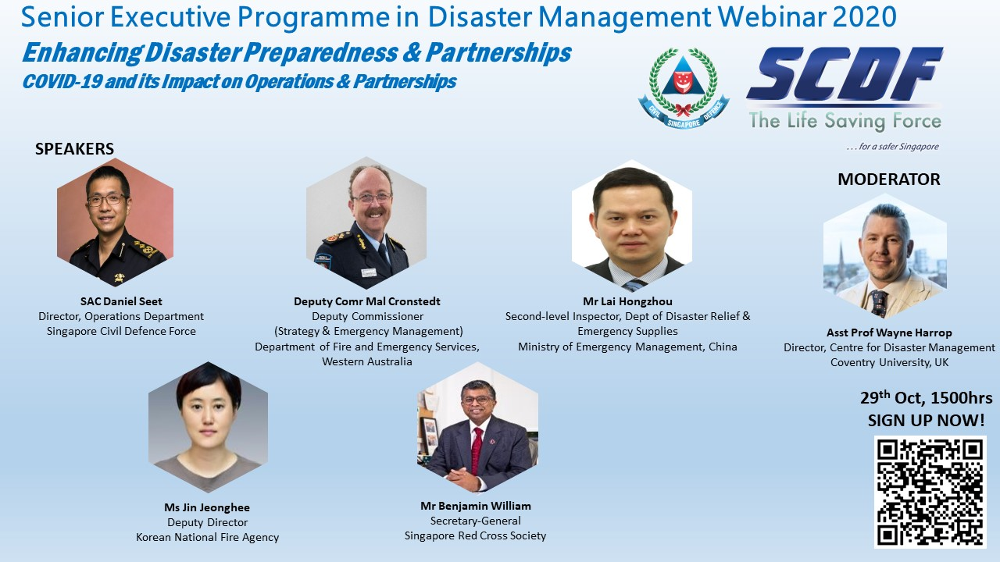
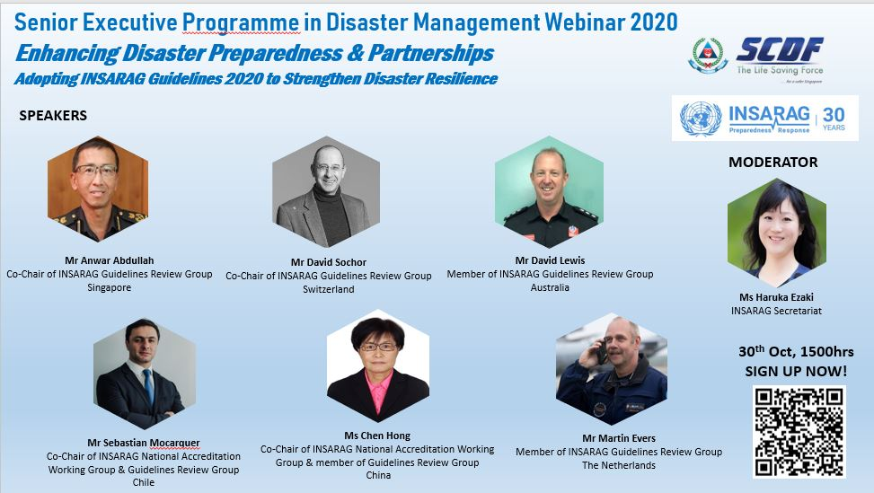

Dear INSARAG Network,
The INSARAG Asia Pacific Chair, Singapore, is organising as part of the Senior Executive Programme in Disaster Management (SEPDM), Webinars on “Enhancing Disaster Preparedness and Partnerships” on 29 and 30 October 2020 and welcomes participation from the INSARAG network.
The Webinar on 29 Oct 2020, 1530hrs to 1730hrs (Singapore Time, UTC+8) will be on COVID19 and its impact on operations and partnerships. The Webinar on 30 Oct 2020, 1500hrs to 1700hrs (Singapore time) will be a sharing session by the GRG members on introduction of the INSARAG Guidelines 2020.
Interested participants may register for the event through our event link: https://bit.ly/3lYT1pi or by scanning the QR code below.
 
Thank you
INSARAG Secretariat